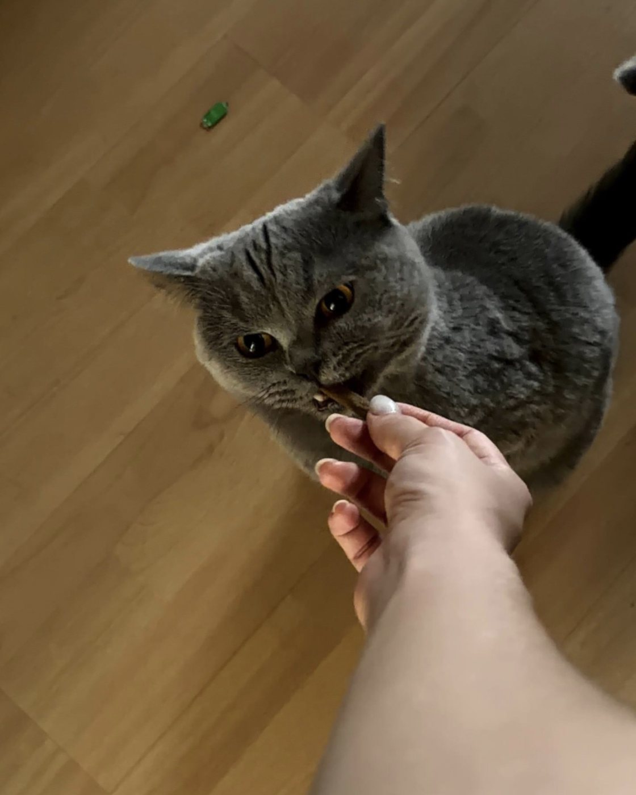

Stuttgart und Umgebung · Minijob-Basis
Gassi und Futter von Studierenden, die wir kennen.
fello vermittelt geprüfte Studierende, die Ihren Hund ausführen, Ihre Katze versorgen oder im Urlaub nach dem Rechten sehen — angestellt und versichert über fello, zu einem festen Preis. Sie bekommen eine feste Betreuerin und nach jedem Besuch ein Foto.
- Persönlich geprüft, mit Führungszeugnis
- 19 € pro Stunde, alles inklusive
- Foto nach jedem Besuch
- 24 Stunden Vorlauf genügen
- 19 €pro Stunde — inklusive Versicherung, Abrechnung und Vertretung
- 14 €davon kommen bei den Studierenden an, über Mindestlohn
- 1 Personfeste Betreuerin oder fester Betreuer, Vertretung nur angekündigt
So geht's
Drei Schritte, dann hat Ihr Tier jemanden
Sie schreiben uns, was Sie brauchen. Wir suchen die passende Person aus unserem Team und stellen sie Ihnen zu Hause vor. Erst wenn Sie und Ihr Tier einverstanden sind, geht es los.
-
Anfrage stellen
Leistung, Wunschzeiten, Tier, Adresse — in vier Schritten unten auf dieser Seite. Innerhalb eines Werktags melden wir uns mit einem Vorschlag.
-
Kennenlernen zu Hause
Die vorgeschlagene Betreuerin kommt vorbei: Tier, Gewohnheiten, Schlüssel, Notfallkontakt. Kostenlos. Passt es nicht, schlagen wir jemand anderen vor.
-
Betreuung mit Rückmeldung
Feste Zeiten, feste Person, nach jedem Besuch ein Foto und zwei Sätze. Abgerechnet wird einmal im Monat über fello — Sie zahlen nie bar an der Tür.
Leistungen und Preise
Ein Preis, keine Überraschungen
Alle Preise enthalten Versicherung, Abrechnung und die Vertretung, falls jemand ausfällt.
-
Gassirunde
11 €Eine halbe Stunde raus: lösen, schnüffeln, Kopf frei. Einmalig oder als feste Mittagsrunde an Ihren Bürotagen.
-
Große Runde
19 €Eine volle Stunde für Hunde, die mehr brauchen als den Block — gern mit Tempo.
-
Fütterungsbesuch
11 €Futter, Wasser, Katzenklo, Post — und Zeit für die Katze, wenn sie will. Ideal für Dienstreisen.
-
Urlaubsbetreuung
22 € / TagZwei Besuche täglich im gewohnten Zuhause, morgens und abends, mit Foto nach jedem Besuch. Pflanzen und Post inklusive.
-
Kennenlernen
kostenlosVor jeder ersten Betreuung: Die Betreuerin kommt vorbei, Sie lernen sich kennen, nichts ist verbindlich.
Zwei Tiere im selben Haushalt kosten nichts extra. Regelmäßige Runden ab drei Tagen pro Woche rechnen wir nach Stunden ab — das ist für Sie günstiger als der Einzelpreis.
Warum Studierende
Zeit haben, wenn Sie keine haben
Die Mittagsrunde fällt in die Vorlesungslücke. Der Abendbesuch nach der Bibliothek. Studierende sind genau dann frei, wenn Berufstätige es nicht sind — und sie wohnen im selben Viertel.
-
Angestellt bei fello, nicht bei Ihnen
Die Studierenden arbeiten auf Minijob-Basis für fello. Sie haben keine Arbeitgeberpflichten, keine Anmeldung, keine Abrechnung — nur eine Rechnung im Monat.
-
Fair bezahlt, deshalb verlässlich
14 € pro Stunde liegen über dem Mindestlohn. Wer gut bezahlt wird, bleibt — und Ihr Tier behält seine Person.
-
Eingearbeitet von jemandem, der es kann
Veronika betreut selbst seit Jahren Hunde und Katzen und begleitet jede neue Kraft beim ersten Einsatz. Niemand steht allein vor einer fremden Tür.
- 603 €darf ein Minijob 2026 im Monat einbringen — steuer- und abgabenfrei für Studierende
- 13,90 €gesetzlicher Mindestlohn 2026. fello zahlt 14 €
- ~43 him Monat pro Person — genug für vier feste Familien
- 1 : 1eine Betreuerin je Tier, keine wechselnden Gesichter
Sicherheit
Vier Stufen, bevor jemand Ihren Schlüssel bekommt
Persönliches Gespräch
Jede Bewerbung führt zu einem Gespräch — keine Freischaltung per Klick. Wir fragen nach Erfahrung, Verlässlichkeit und Motiv.
Erweitertes Führungszeugnis
Pflicht für alle, ohne Ausnahme. Wer keins vorlegen will, arbeitet nicht für fello.
Probeeinsatz mit Veronika
Die erste Betreuung läuft zu zweit. Erst wenn Veronika zufrieden ist, geht jemand allein zu einem Tier.
Ihr Kennenlernen
Sie und Ihr Tier entscheiden zuletzt. Ohne Ihr Okay nach dem Hausbesuch gibt es keinen Einsatz.
Wie ein Besuch aussieht
Manche warten schon an der Tür
Der erste Besuch eines Tages, ungeschnitten: aufschließen, begrüßt werden, erst einmal zuhören. Genau solche Momente bekommen Sie nach jedem Besuch als Foto oder kurzes Video.
Das Video startet erst, wenn Sie es anstoßen. Ton lohnt sich.
Für Studierende
Gassi gehen statt kellnern
Feste Tiere, feste Zeiten, die zu deinem Stundenplan passen — und ein Job, bei dem du draußen bist.
- 14 € pro Stunde, brutto wie netto bis zur Minijob-Grenze
- 603 € im Monat möglich, sozialversichert über fello
- Du wählst Wochentage und Zeitfenster, wir suchen passende Tiere im Viertel

Anfrage
In vier Schritten zur Betreuung
Wir melden uns innerhalb eines Werktags mit einem Vorschlag. Verbindlich wird es erst nach dem Kennenlernen bei Ihnen.
- 1 Leistung
- 2 Wann
- 3 Tier
- 4 Kontakt
Was brauchen Sie?
Beim ersten Mal ist das Kennenlernen der richtige Anfang — daraus wird direkt die erste Betreuung.
Wann soll jemand kommen?
Bei regelmäßigen Runden reicht der Rhythmus — den genauen Start klären wir beim Kennenlernen.
Wer wird betreut?
Danach suchen wir die passende Person — jemanden, der Ihre Tierart kennt und in der Nähe wohnt.
Wie erreichen wir Sie?
Die Anfrage ist noch keine Buchung. Sie bekommen einen Vorschlag, dann ein Kennenlernen, dann geht es los.
Fast geschafft
Ihre Anfrage steht bereit. Über WhatsApp antworten wir meist am schnellsten.
Es ist dringend? Rufen Sie an: +49 176 57990459. Regelmäßige Betreuung können Sie jederzeit zum Monatsende beenden, einzelne Termine bis 24 Stunden vorher absagen.
Häufige Fragen
Bevor Sie anfragen
Kommt immer dieselbe Person?
Ja. Sie bekommen eine feste Betreuerin oder einen festen Betreuer. Fällt die Person aus — Klausurphase, Krankheit — stellen wir vorher eine Vertretung vor, die ebenfalls bei Ihnen war. Ohne Ankündigung steht niemand Fremdes vor der Tür.
Was kostet es wirklich?
Genau das, was auf dieser Seite steht: 11 € für eine halbe Stunde, 19 € für eine Stunde, 22 € pro Tag Urlaubsbetreuung. Darin sind Versicherung, Abrechnung und Vertretung enthalten. Es gibt keine Anmeldegebühr und keinen Mindestumfang.
Wer stellt die Studierenden an — ich oder fello?
fello. Die Studierenden sind bei uns auf Minijob-Basis beschäftigt, angemeldet und versichert. Sie haben mit Arbeitsrecht, Minijob-Zentrale und Unfallversicherung nichts zu tun — Sie bekommen einmal im Monat eine Rechnung.
Was passiert mit meinem Schlüssel?
Übergabe nur persönlich beim Kennenlernen, ohne Namensschild, ohne Adresse. Wo er liegt, wird nie per Nachricht besprochen. Nach der letzten Betreuung bekommen Sie ihn zurück, oder er bleibt bei Ihrer festen Betreuerin, wenn Sie das möchten.
Und wenn mein Tier krank wird?
Dann werden Sie sofort angerufen. Beim Kennenlernen halten wir fest, welche Tierarztpraxis zuständig ist, wer im Notfall entscheiden darf und bis zu welchem Betrag gehandelt werden soll. Ohne diese Absprache fährt niemand auf eigene Faust irgendwohin.
Wie schnell geht es?
Anfrage heute, Vorschlag innerhalb eines Werktags, Kennenlernen meist innerhalb einer Woche. Für einzelne Termine reichen danach 24 Stunden Vorlauf. Bei Notfällen rufen Sie an — oft findet sich jemand im Viertel.
Wo sind Sie unterwegs?
In Stuttgart und im Umland: das gesamte Stadtgebiet sowie Fellbach, Kornwestheim, Ludwigsburg und Remseck am Neckar. Weitere Orte kommen dazu, sobald wir dort Studierende im Team haben.
Kontakt
Lieber kurz sprechen?
Direkt
+49 176 57990459
veronikayovenko@gmail.com
Antwort meist innerhalb weniger Stunden, spätestens am nächsten Werktag.
Einsatzgebiet
Stuttgart
und Umgebung
Stadtgebiet Stuttgart sowie Fellbach, Kornwestheim, Ludwigsburg und Remseck am Neckar.
Für Studierende
Gespräch, Führungszeugnis, Probeeinsatz — dann die erste Familie.